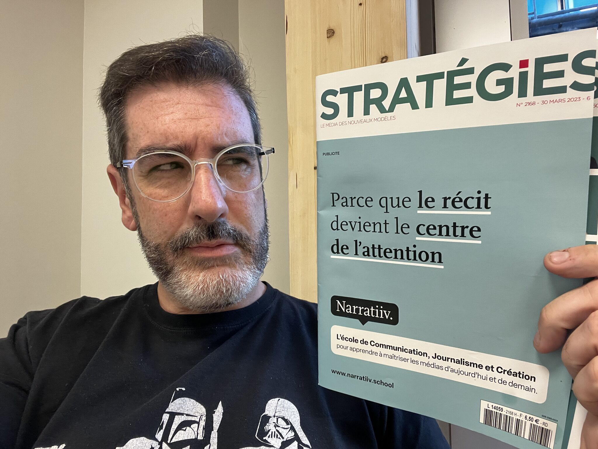

Dans le paysage numérique français en constante évolution, une figure se démarque par sa capacité à décrypter les tendances technologiques émergentes : Damien Douani. Pionnier du web, conférencier hors pair et podcasteur de renom, cet explorateur des nouveaux usages numériques nous guide à travers les méandres de l'innovation.
Un parcours atypique au cœur du numérique
Le parcours professionnel de Damien Douani est à l'image de sa personnalité plurielle. Après des débuts chez Orange en tant que responsable innovation et prospective, il a occupé divers postes mêlant numérique, marketing et entrepreneuriat. Co-fondateur de l'agence FaDa spécialisée dans l'accompagnement digital des entreprises, il a également été directeur marketing Europe chez BlueKiwi, une start-up rachetée par Atos.
Mais c'est aujourd'hui qu'il déploie pleinement ses ailes d'explorateur numérique. En tant qu'Explorateur chez LAB36, Damien Douani scrute les innovations et usages émergents pour en décrypter les impacts sociétaux. Parallèlement, il officie comme responsable du Creative Lab de Narratiiv, une école formant aux nouveaux métiers du numérique.
Un décrypteur de l'ère digitale
La véritable passion de Damien Douani ? Rendre les technologies de demain accessibles au grand public. Que ce soit en tant que chroniqueur dans l'émission culte "On Refait Le Mac" sur ORLM.tv, ou comme animateur d'émissions TV/web dédiées à l'économie numérique, il excelle dans l'art de vulgariser les enjeux technologiques complexes.
Son domaine de prédilection ? L'intelligence artificielle et ses multiples implications. En tant qu'enseignant à Narratiiv, il forme les futurs talents aux enjeux de la créativité augmentée et des nouvelles narrations portées par l'IA. Un sujet qu'il explore également dans son podcast phare "Les Éclaireurs du Numérique", véritable référence avec près de 150 épisodes à son actif.
Un ambassadeur de la pop culture numérique
Mais Damien Douani ne se cantonne pas aux seules technologies de rupture. Cet explorateur des nouveaux médias s'attache également à décrypter les tendances émergentes de la pop culture numérique. Des nouveaux formats narratifs aux usages inédits du web, il analyse avec brio les phénomènes qui façonnent notre quotidien digital.
Que ce soit en conférence, à la télévision ou sur les ondes, Damien Douani se positionne comme un guide de choix pour appréhender les futurs numériques. Un rôle d'éclaireur qu'il endosse avec passion, offrant à chacun les clés de compréhension d'un monde en mutation permanente. En somme, un explorateur d'exception pour une ère numérique riche en rebondissements.
 Damien Douani, via linkedin